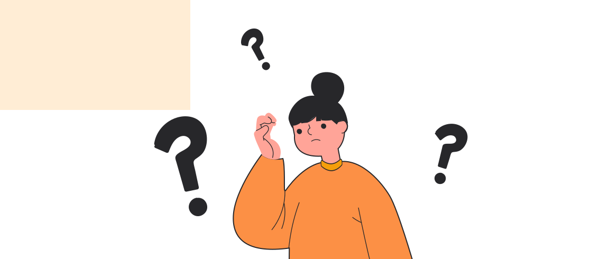

Gejala Gangguan Kesehatan Mental
1 November 2021

Kenali gejala gangguan kesehatan mental sejak dini. Apa saja gejala gangguan kesehatan mental? Dikutip UNICEF, gejala gangguan kesehatan mental sebagai berikut:
1. Sering merasa cemas atau ketakutan akan suatu hal secara
berlebihan.
2. Sering sakit atau imunitas tubuh sering menurun.
3. Pola tidur yang berubah, seperti insomnia atau bahkan banyak tidur.
4. Menjadi pribadi yang mempunyai mood atau suasana hati yang tidak
teratur.
5. Perubahan drastis dalam kebiasaan makan, seperti makan terlalu banyak atau terlalu sedikit.
Kenali gejala yang dirasakan. Segera memeriksakan diri ke dokter untuk penanganan lebih lanjut.